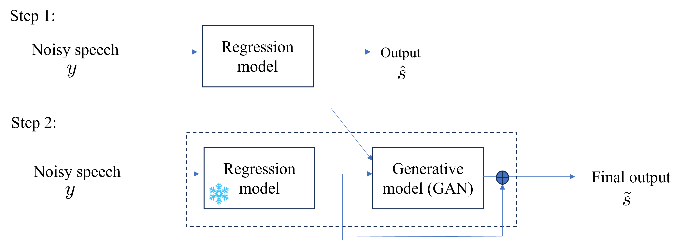
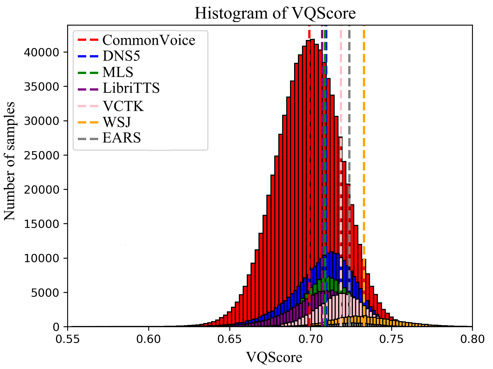
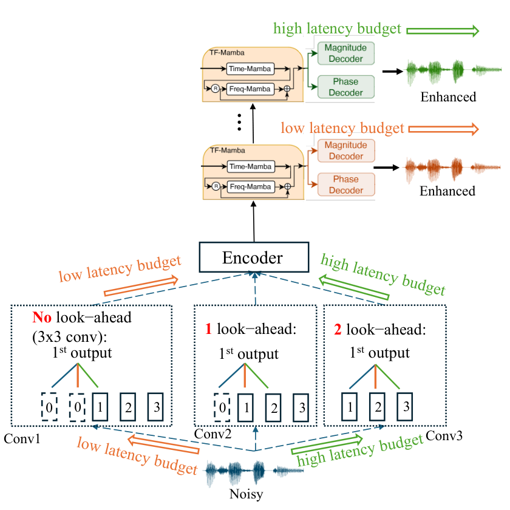

RE-USE Family：让语音更清楚，不能把丢失的信息当成恢复的真相
🧭 先把时间、模型与许可分开
| 对象 | 明确日期与用途 | 本图谱处理 | 不能据此推出 |
|---|---|---|---|
nvidia/RE-USE | 原卡写 Hugging Face 2026/03/18；旧版本名 30USEMamba_peak+GAN_tel_mic_1134k | family 首发保留 3/18，补回历史叶子 | 不能把 10 月创建的新仓库当首发 |
NVIDIA-NemotronLabs-RE-USE | 新卡写 10/22/2026，标准语音增强 | 同 family 新发布阶段 | 不能断言与旧权重逐位相同，也不能断言重训了一代 |
…-RE-USE-laughter | 新卡同为 10/22；额外涉及 VocalSound、笑声保留用途 | 同 family 的 laughter 变体，不拆正代 | 不能只靠整体分数证明笑声保真 |
Real-time_RE-USE | 原卡链接的另一实时工作，用于机制对照 | 本篇背景来源，不替换双向 checkpoint | 不能把其因果/延迟设计移植成标准版已有能力 |
三月旧卡为 NVIDIA One-Way Noncommercial 条款；十月新卡与仓库主 LICENSE 写 OpenMDW-1.1，新代码文件也有对应标记。但新仓库的 Explainability / Safety 子卡仍链接 NVIDIA Open Model License。这里如实保留这处来源不一致，不能把旧卡自动重授权，也不提供商业使用的法律结论。实际使用应按选定仓库 revision 核对完整条款及依赖；本轮只阅读、归档，没有接受协议或运行权重。
🎯 为什么语音增强不只是“降噪”
录音的退化往往叠加：环境噪声、房间反射、削波、电话带宽、编码失真、丢包、麦克风响应都会影响可懂度。模型希望恢复听感，同时保留语言内容、身份、口音、情绪。这两个目标存在张力：回归输出容易平滑，生成性补偿则可能制造听起来合理却不真实的音素。
对语音 Agent，风险不止 WER：笑声、犹豫和第二个说话人的话可能具有任务含义。新卡的重叠说话人设定是突出主说话人、抑制其他声音，不是分离并完整保留所有发言的会议档案工具。本笔记不把增强音频当事实原件；原音应在授权范围内单独保留。
🧩 当前发布代码真正能确认什么
当前配置的 num_tfmamba=30、hidden feature 64、state 16、conv 4、expand 4。幅度与相位两个通道进入卷积编码器，经过时频 Mamba 块，再由幅度与相位 decoder 重建。源码中时间与频率各使用前向、反向 Mamba，并拼接投影；时间方向显式 flip，因此不是因果单遍流式。
默认 STFT 基准是 8 kHz、FFT/window 320、hop 40，即 40 ms 窗、5 ms 帧步。采样率适配代码按实际采样率缩放窗口与步长。不要把 5 ms hop 当端到端延迟：反向时间上下文、center=True、整段或重叠分块、GPU 计算都会贡献等待。
| 环节 | 源码/配置证据 | 工程判断 |
|---|---|---|
| 输入 | 原卡列 mono WAV 与 8/16/22.05/24/32/44.1/48 kHz | 脚本虽逐通道循环，不等于验证过空间/多通道保真 |
| 映射 | mapping=True，幅度及相位分别解码 | 不是只滤去噪声的固定线性滤波器 |
| 分块 | inference_chunk.py 使用 Hann 重叠、window_sum 归一化 | 是离线显存/长音频处理方法，不自动变实时 |
| 长度 | 输出 pad/trim 对齐输入，保存 FLAC | 文件长度对齐不代表事件边界或音素完全不变 |
| 频带 | 可选 --BWE 先重采样至目标率再增强 | 超出原始频带部分为推断，不是恢复可验证原始信号 |
| 设备 | 推理脚本在无 CUDA 时直接报 CPU 不支持 | 配置的 8 GPU 是训练设置，不是每次推理必需 8 卡 |
特别注意：分块脚本把 from_pretrained 仓库 ID 写死为标准版，命令行虽有 --checkpoint_file，主加载路径并未使用它。不能仅替换文件名就声称已验证 laughter 推理；应先审查具体版本的加载代码。此处只做静态审阅，不修改或执行原始材料。
📐 原论文的三个判断，与当前权重不要混为一谈

官方原图，来自 2603.02641v4。它解释论文方案，不是 10/22 两个 checkpoint 的结构认证。
第一，“干净目标”本身决定学习问题。论文比较早期反射与消声目标，主张保留直接路径的时间偏移，而不让模型额外学习把声音强行提前。侵入式指标依赖 clean reference，早期反射参考和原始消声参考不可混排；同样一段输出可因参考定义改变而得出不同结论。
第二，回归与生成分工。论文先用回归保留稳定内容，再以冻结的回归结果为基础做 GAN 残差修正，而不是让一套模型为听感整体改写信号。论文报告残差相关性与小规模听测支持这种分工，但这不是逐样本保证。当前公开主路径是 30 块 SEMamba 单次调用，不能只凭论文插图补写“该路径还加载了完整 6 层第二阶段 GAN”。
第三，“clean”训练数据也可能不干净。论文用 VQScore 做质量筛选，阈值提高会减少数据覆盖；情绪性、耳语等表达可能与质量评分偏好冲突。样本越多并不必然越好，筛选越严也不必然不损失多样性。新卡列的约 2500 小时是近似来源规模，不是本轮重新核对的去重训练账本。

官方原论文数据质量图；不是 laughter 版的新评测，也不是本地画的实验结果。
卡片列举 LibriVox/DNS5、LibriTTS、VCTK、WSJ、MLS、CommonVoice、内部 Riva，以及噪声、RIR、麦克风响应和模拟退化。约数不能直接相加得到精确总时长；laughter 卡额外提到 VocalSound，却未披露完整混合比、笑声标注分布或逐条件胜率。旧卡也明确提醒：发布模型加入麦克风/codec 等退化并在更高质量子集微调，区别于论文评测版本。
📊 新模型卡的结果：读完整，不只挑赢的指标
以下逐项转录模型卡 URGENT 2025 non-blind 表，数值是官方报告，非本轮复测；表中指标均按原卡名称。Spk 为 speaker similarity，CAcc 为 ASR character accuracy。论文的 ESTOI 和卡的 STOI 标签不擅自统一；不同 clean reference 或测试子集不能跨行当严格公平消融。
| 全采样率集合 | 参数 | DNSMOS | NISQA | UTMOS | PESQ | STOI | SBERT | LPS | Spk | CAcc |
|---|---|---|---|---|---|---|---|---|---|---|
| Noisy | — | 1.84 | 1.69 | 1.56 | 1.34 | .50 | .74 | .61 | .73 | 81.29 |
| Sidon | 250M | 3.34 | 3.87 | 3.21 | 1.73 | .62 | .85 | .80 | .74 | 84.68 |
| UniPASE | 500M | 3.21 | 4.03 | 2.96 | 2.17 | .76 | .89 | .85 | .81 | 87.28 |
| RE-USE 标准 | 9.6M | 3.29 | 4.33 | 2.94 | 2.57 | .78 | .88 | .85 | .86 | 89.17 |
| RE-USE laughter | 9.6M | 3.26 | 4.27 | 2.93 | 2.60 | .78 | .88 | .85 | .87 | 89.21 |
| 16 kHz 子集 | DNSMOS | NISQA | UTMOS | PESQ | STOI | SBERT | LPS | Spk | CAcc |
|---|---|---|---|---|---|---|---|---|---|
| Noisy | 1.84 | 1.59 | 1.41 | 1.29 | .53 | .70 | .58 | .63 | 76.54 |
| UniSE | 3.23 | 3.71 | 2.77 | 1.46 | .62 | .77 | .60 | .57 | 54.82 |
| RE-USE 标准 | 3.19 | 4.20 | 2.64 | 2.47 | .82 | .87 | .84 | .82 | 87.09 |
| 44.1 kHz 子集 | DNSMOS | NISQA | UTMOS | PESQ | STOI | SBERT | LPS | Spk | CAcc |
|---|---|---|---|---|---|---|---|---|---|
| Noisy | 1.91 | 1.79 | 1.52 | 1.30 | .52 | .76 | .61 | .80 | 83.65 |
| Resemble Enhance | 3.13 | 3.68 | 2.11 | 1.33 | .41 | .69 | .46 | .57 | 47.22 |
| RE-USE 标准 | 3.36 | 4.44 | 2.80 | 2.47 | .80 | .89 | .86 | .90 | 91.54 |
| 48 kHz 子集 | DNSMOS | NISQA | UTMOS | PESQ | STOI | SBERT | LPS | Spk | CAcc |
|---|---|---|---|---|---|---|---|---|---|
| Noisy | 2.04 | 1.83 | 1.99 | 1.28 | .55 | .77 | .77 | .78 | 90.64 |
| ClearVoice | 2.97 | 3.38 | 3.01 | 2.09 | .70 | .84 | .87 | .77 | 89.92 |
| RE-USE 标准 | 3.33 | 4.49 | 3.63 | 2.59 | .77 | .89 | .91 | .86 | 91.05 |
我的判断：标准版的 NISQA、PESQ 等显示出较强修复能力，但并非所有听感和语义指标最优。全集合 CAcc 从 81.29 到 89.17 是 +7.88 个百分点，不是在任意 ASR 或下游 Agent 上保证提升 7.88%。laughter 的总体微小差异也不能回答“笑声有没有保留”，还需要对应类别、身份与时长测试。
⏱️ 为什么另一个实时报告不能拿来给本模型背书

官方原图来自 2606.25621v3，描述另一实时设计。它作为阅读对照保留，不冒充当前标准版结构。
实时工作讨论 lookahead、early-exit 与多 decoder 等延迟/质量权衡。关键不是文件分成几块，而是需要多少未来音频、每步计算是否赶得上输入。当前卡的双向设计、长音频分块说明以及缺少实测延迟表，都不支持将其写成“零延迟流式”。训练片段短于 10 秒、长片段建议分块，也意味着跨块说话人/情绪一致性值得独立验收。
🧪 如果用于 Agent Training，该怎么设计实验
| 问题 | 控制变量 | 需要留下的证据 |
|---|---|---|
| 是否真的减少听错 | 相同原音、ASR、prompt、语种、噪声分层 | 原音/标准/laughter 三路 WER、实体与数字准确率 |
| 是否改写原意 | 关键口令、否定词、人名、长丢包 | 人工逐段核验与不可恢复区标记，不只听感分 |
| 是否保留副语言 | 笑声/耳语/犹豫/重叠发言分层 | 身份、事件时长、第二说话人删除比例 |
| 是否提升任务成功 | 固定策略、环境、工具及 token 预算 | 最终状态验收、失败类型、成功任务成本 |
| 是否可部署 | 固定 GPU/采样率/时长/chunk/hop | p50/p95 延迟、峰值显存、跨块边界，不用 hop 代替延迟 |
采用独立的任务 verifier，不把生成器自己认为“更清晰”当 reward。训练集清洗还应记录每段音频输入哈希、处理版本、采样率与失败状态，避免把增强产生的伪音素固化成 SFT 标签。隐私子卡称使用了有同意的外部个人数据，但外部删除访问机制写 Unknown；这不是所有应用场景隐私合规已经完成的证明。Bias 子卡未给群体公平评测，不能写成已证实无偏。
🔗 一手资料与本地材料
- 🤗 新标准版 Model Card；laughter Model Card；旧版 Model Card。
- 📄 Tech Report：训练目标、架构与数据质量；Tech Report：Real-time RE-USE。报告 PDF 只保留链接，不下载。
- 本地原文：标准卡、laughter 卡、三月原卡；
src/reference/为只读归档代码；src/retrieval_manifest.json记录来源、日期与哈希。 - 相关研读：Granite Speech 5：识别组件与数据处理的边界、Flora：机器人标注与过程奖励同样需要独立验证器。
📊 相关可视化：RE-USE 中文研究 Poster；图谱对应同一个 family，10/22 阶段不重复创建正代叶子。